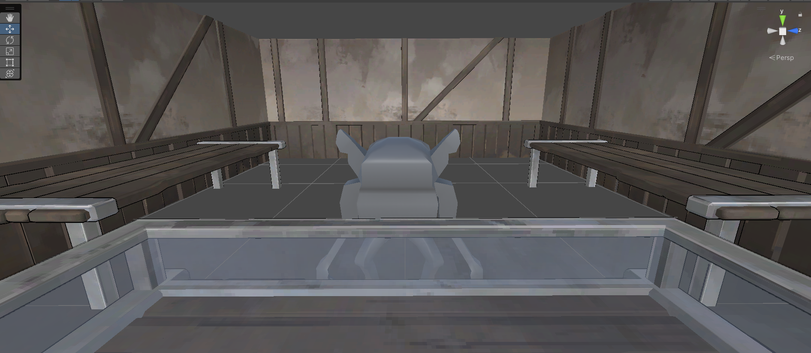

Gobling
The Project
*Gobling* is a game developed with AI implementation, where players take on the role of a goblin running a pawn shop. Each day, different clients visit to buy and sell items, and the player can negotiate prices. The AI-driven customers remember past interactions and adjust their offers based on previous bargaining behavior.
The core mechanics include:
- Clients offering to buy or sell items, with the player able to haggle.
- Clients remembering how much the player deviates from their original price, impacting future deals.
- Every three in-game days, the player must pay rent, which gradually increases over time.
My Part
I worked extensively on the client and item systems, handling various mechanics such as:
- Client data and behavior, ensuring customers have memory and dynamic pricing logic.
- The client manager, responsible for handling multiple customers across different in-game days.
- Item data and behavior, setting up the framework for different types of items in the shop.
- The initial implementation of the item manager.
- The day event manager, which tracks and updates daily shop interactions.
- The pawning manager, including the pawning algorithm that determines item values and transactions.
- Saving customer experience to ensure AI-driven interactions persist across sessions.
- Pixelazation, making the output of the camera more pixelated for artstyle purposes
My contributions helped shape the core gameplay loop, ensuring smooth AI interactions and an evolving player experience based on negotiation history.
Pre Pixelazation

Post Pixelazation